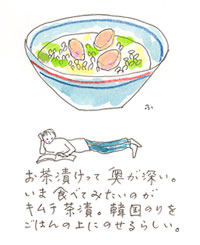
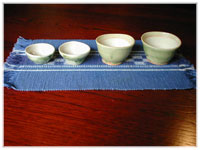

|
■「お茶漬け」風
年賀状が刷り上がってきた。ついこの間、ひとやま書いて片づけたような気がするのに、また書くわけね。そのくらい、この一年の過ぎ方ははやかった。年賀状のやりとりは、自分の人間関係の結び方をつきつけられるという、手厳しい一面をもっている。なんというか、そう、通知表でももらうような気持ちになることがある。
「私はだからさ、暮れのうちには書かないのよ。お正月、年賀状がきたら返事を書くというスタイル。これでだいぶ書く相手が減るのよね」
と友だちに教えられたことがある。
「ぜったーい、全然書かないの。その年出会ったひとに『わたしね、年賀状は書きませんの』と挨拶することがあるくらい。いいわよ、さっぱりして」
と、これはまた別の友だち。
どちらの方法も、わるくない、私もそうしてしまおうか、と思いかけて、それでもなお毎年年賀状を用意するのは、年賀状を交わすだけの大切な友人がいるからなのだ。
「今年こそ、お会いしたいですね」
なんて一言書き添えながら、たぶん会えないだろうこともわかっている相手。かつては家が近かったり、仕事で顔を合わせる機会があったけれど、電話をしてどこかで待ち合わせて話をすることは、おそらくもう、ない。ないだろうけれども、そのひととの思い出を確認する、そんな気持ちで年賀状を書くのだ。
年賀状そろそろ書かないとなあ、とか今年はお節料理をしっかりつくろうかな、とか年末思考に傾いていきながら、商店街を歩いていたら、声をかけられた。
「お買物？」
声の主は、まんなかの娘の同級生だった。私の返事など待たずに、こう言った。
「晩ごはん、お茶漬けなの。で、いろいろ買いにきたんだ」
彼女の口からでた「お茶漬け」ということば。突然、目の前がぱあっとひらけたような気がした。 「いろいろって、どんないろいろなの？」
「塩鮭でしょ、塩昆布でしょ、」
彼女はポケットからメモをとりだして、読み上げた。
「……たらこ、みつば、」
年末思考に傾きかけたのがぐらりと反転、「お茶漬け」方面に向かって動き出していた。その日私は、うなぎの白焼きを中心に、晩ごはんをこしらえる心積もりをしていた。うなぎなど家ではたまにしか食べないけれど、この日はなんだか威勢よく「うなぎ」ということにしたいような気持ちだった。だけどね、
「白焼きのうなぎ茶漬けにしようっと」
ほんとうは年賀状を書くためのサインペンを買いに出てきただけだったが、八百屋で切りみつばをもとめた。冷蔵庫のなかから、友だちが福岡で買ってきてくれた明太子、長野から届いた野沢菜を取りだす。海苔でしょ、わさびでしょ。「えのき茶漬け」とかいう、えのき茸を珍味に仕立てたびん詰めもあったっけ。だしをいっぱいつくらなきゃ。お茶、お茶。という騒ぎの末、この日ばかりはちゃぶ台に、お茶漬けの友をならべたてた。
「わーっ」
と歓声が上がる。いちばん下の三歳の娘には、生まれて初めてのお茶漬けだった。
「ごはんに、おつゆがはいってるの？」
蒸した白焼きのうなぎを、食べやすい大きさにそぎ切りし、山椒の実の塩漬け、みつば、わさびとともに炊きたてのごはんにのせた。上からそっと熱いだしをかける。
さらさらやったあと、一瞬声がない。
「うまい」
お茶漬けは不思議な食べものだ。「さらさら」ということばで表現され、軽く、簡単にすませようというときに食べるという印象もあるが、気を入れて向き合うなら、和食の極意のあたりをそぞろ歩くことになりそうである。くたびれた胃にも、心にも、その滋味が沁みわたるだろう。
滋味。誰のなかにも、それはある。しかし、無理をしたり、背のびし過ぎたりして、滋味をうすめてしまう。私もそろそろ、自分のなかにあるはずの滋味をたたいたり、のばしたり干したりしなければ。電圧（テンションということかしら、ね）を上げなければ成立しないことは、少しずつ手放していこう。あるときはこってりとした食材を包みこんで、さらりとおさめるお茶漬け風に……２１世紀は、やっていきたい。
そんなことを胸に誓ったせいか、用意した年賀状がずしりと、余った。

■たまご茶漬け（２人分）
ゆで卵…………………………………………２個
白身魚の干物（ハムでもおいしい）………適宜
小ねぎ（または、みつば）…………………適宜
だし（清汁よりも少し濃いめに）…………適宜
ご飯……………………………………………適宜
・ゆで卵を白みと黄みに分けて、それぞれ裏ごす。
・魚は焼いて細かくむしる（骨を除くこと）。ハムの場合はせん切りにする。
・あたたかいご飯の上に、半分白み、半分黄みをのせ、まんなかに魚（またはハム）と、小口切りにした小ねぎをのせる。
・だしを静かにかけて、さらさらと。
※ご飯の上にのっているのが卵だと気づかないひともあるほど、さっぱりと食べやすいお茶漬け。お正月、ごちそうつづきでくたびれた胃に、やさしい一品だ。
※卵茶漬けはだしをかけるが、うなぎ茶漬けは煎茶をかけても美味しい。煎茶は少しさました湯でていねいにいれること。

|